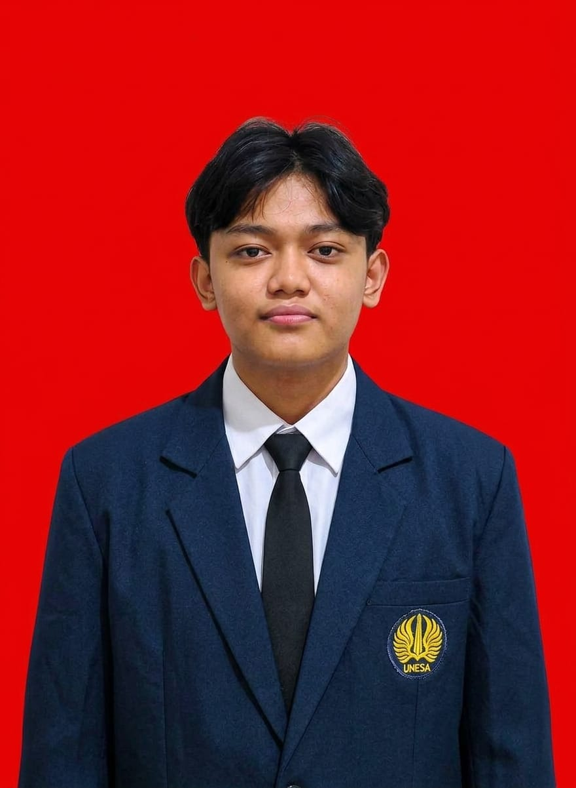

2025
Lomba Kopetensi Siswa(LKS)-Teknik Desain Laman(web tecnology)-tingkat provinsi
Dinas Pendidikan dan Kebudayaan Provinsi Papua Tengah
Juara 1 lomba teknik desain laman tingkat provinsi Papua Tengah-Nabire
Lihat buktiMahasiswa Sistem Informasi Universitas Negeri Surabaya yang suka mengubah data dan ide menjadi sistem yang berguna.

Saya Hengky Leonardus Tio, mahasiswa Program Studi Sistem Informasi, Fakultas Teknik, Universitas Negeri Surabaya. Saya tertarik pada pemrograman, analisis data, dan cara teknologi membantu orang bekerja lebih efisien.
Di kampus saya belajar pemrograman Python, statistika, dan sistem operasi, serta aktif mengerjakan tugas kuliah. Portofolio ini menjadi tempat saya mengumpulkan kemampuan dan karya yang terus bertambah.
Kemampuan dan tools yang saya pelajari selama SMK dan kuliah.
Menulis program untuk memecahkan masalah dan membuat halaman web sederhana.
Memahami dasar jaringan komputer, merancang topologi, dan mengatur konfigurasi jaringan.
Bekerja dengan command line, mengelola versi kode, dan merancang materi visual.
Catatan pencapaian dan pengalaman yang saya tempuh.
Dinas Pendidikan dan Kebudayaan Provinsi Papua Tengah
Juara 1 lomba teknik desain laman tingkat provinsi Papua Tengah-Nabire
Lihat buktiKementerian Pendidikan Dasar dan Menengah (Kemendikdasmen) melalui Pusat Prestasi Nasional (Puspresnas).
Saya berpartisipasi mewakili Provinsi Papua Tengah-nabire dalam lomba Teknik Desain Laman-nasional di depok-jakarta
Lihat buktiSMKN 2 Teknologi dan Rekayasa Nabire
Saya Melakukan Praktik Kerja Lapangan di BPJS Ketenagakerjaan Nabire yang saya lakukan mengelola data peserta bpjs,mengurus kartu bpjs,dan melakukan sosialisasi
Lihat buktiTerbuka untuk diskusi, kolaborasi proyek, dan kesempatan belajar baru. Kirim pesan kapan saja.